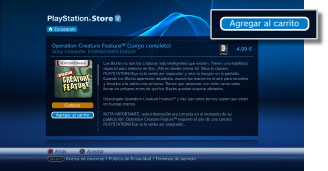
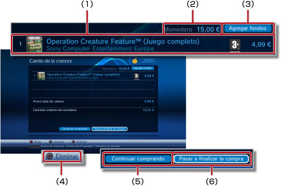
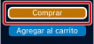
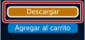
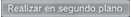
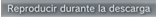
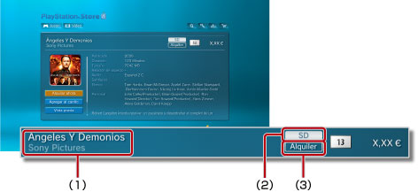

PlayStation®Network > Descarga (compra) de productos
Descarga (compra) de productos
Para utilizar esta función, debe mantener siempre el software del sistema actualizado con la versión más reciente.
Es posible descargar productos (comprados o gratuitos) como juegos, elementos adicionales para juegos o contenido de vídeo que se encuentran disponibles en  (PlayStation®Store). Para descargar productos (comprados o gratuitos) a través de (PlayStation®Store), deberá, en primer lugar, crear una cuenta de PlayStation®Network.
(PlayStation®Store). Para descargar productos (comprados o gratuitos) a través de (PlayStation®Store), deberá, en primer lugar, crear una cuenta de PlayStation®Network.
1. |
Seleccione |
||||||||||||
|---|---|---|---|---|---|---|---|---|---|---|---|---|---|
2. |
Seleccione el elemento que desea descargar (adquiriéndolo por un precio estimado o de manera gratuita) en |
||||||||||||
3. |
Seleccione [Agregar al carrito].  |
||||||||||||
4. |
Seleccione [Ver carrito] para que se muestre la siguiente pantalla. 
|
||||||||||||
5. |
Seleccione [Pasar a finalizar la compra]. |
||||||||||||
6. |
Seleccione [Confirmar compra]. |
||||||||||||
7. |
Seleccione el elemento que desea descargar. |
Notas
- Los productos disponibles en (PlayStation®Store) varían en función del país o la región. Tenga en cuenta que sólo puede acceder a (PlayStation®Store) correspondiente al país o región de origen de su cuenta de PlayStation®Network.
- Si desea obtener información acerca de los tipos de productos que se pueden descargar (comprados o gratuitos) en (PlayStation®Store) y del servicio posventa, visite el el sitio Web de SCE de su región.
- Si selecciona [Comprar] para la compra de un elemento en el paso 3, podrá evitar la página del carrito de compra y acceder directamente a la pantalla de confirmación de compra (paso 6). Si hay información guardada sobre su tarjeta de crédito en su cuenta PlayStation®Network, los fondos se agregarán automáticamente cuando el monedero no disponga de fondos suficientes para completar la compra.

- Cuando seleccione [Descargar] para un elemento gratuito (paso 3), evitará la página del carrito de compra y accederá directamente a la pantalla de descarga (paso 7).

- Si el ID de inicio de sesión (dirección de correo electrónico) no es correcto (o no es una dirección de correo electrónico válida), el mensaje de confirmación no se recibirá. Utilice una dirección de correo electrónico válida donde pueda recibir mensajes cuando registre su ID de inicio de sesión. Para cambiar su ID de inicio de sesión, vaya a
 (PlayStation®Network) y, a continuación, seleccione
(PlayStation®Network) y, a continuación, seleccione  (Administración de cuentas) >
(Administración de cuentas) >  (Información de cuenta) > [ID de inicio de sesión (dirección de correo electrónico)]. Siga las instrucciones en pantalla para llevar a cabo las revisiones.
(Información de cuenta) > [ID de inicio de sesión (dirección de correo electrónico)]. Siga las instrucciones en pantalla para llevar a cabo las revisiones. - Parte del contenido descargado (comprado) procedente de (PlayStation®Store) sólo lo podrán utilizar dispositivos activados con el sistema PS3™ como, por ejemplo, otro sistema PS3™ o un sistema PSP™. Para activar o desactivar un dispositivo, seleccione (Administración de cuentas) en (PlayStation®Network) y, a continuación, seleccione
 (Activación del sistema). Siga las instrucciones que aparecen en pantalla para completar la operación.
(Activación del sistema). Siga las instrucciones que aparecen en pantalla para completar la operación. - Cuando se visualice

durante una descarga, es posible realizar otras operaciones durante la descarga. Seleccione para retroceder a la pantalla anterior mientras continúa la descarga. Para obtener más información, consulte (Red) > (Administración de descargas) > [Descarga en segundo plano] en esta guía.
(Red) > (Administración de descargas) > [Descarga en segundo plano] en esta guía. - Si se visualiza

en la pantalla durante una descarga, el vídeo se podrá reproducir mientras se descarga. Al seleccionar , (PlayStation®Store) se cierra y comienza la reproducción del vídeo.
Tipos de contenido disponibles en la tienda de vídeo
Existen dos tipos de contenido de vídeo disponibles en la tienda de vídeo de PlayStation®Store. Es posible descargarse (como adquisición o alquiler) productos de la tienda de vídeo del mismo modo que se descargan productos en la tienda de juegos de PlayStation®Store.

(1) |
Nombre del contenido. |
||||
|---|---|---|---|---|---|
(2) |
Resolución del vídeo. |
||||
(3) |
Indica si el contenido está en venta o en alquiler.
|
Las limitaciones sobre el tiempo de reproducción, el período de descarga efectivo y los tipos de contenido que se pueden descargar y que están disponibles varían, todos, en función del país o región desde el que se accede a PlayStation®Store.
Notas
- La tienda de vídeo de PlayStation®Store solamente está disponible en un número limitado de países y regiones. Los idiomas compatibles también están limitados y los tipos de servicio disponibles variarán en función de la región. Para obtener información detallada, póngase en contacto con la línea de soporte técnico de su región.
- Es posible que el contenido adquirido o alquilado en la tienda de vídeo solamente se pueda descargar una vez durante un término de uso autorizado. No está permitido volver a descargarse el contenido sin otra adquisición.
- Solamente es posible descargar o visualizar contenido de vídeo si el sistema PS3™ está activado con una cuenta de PlayStation®Network. Solamente se puede activar un sistema PS3™ con cada cuenta para contenido de vídeo. En la mayoría de casos, el sistema se activa automáticamente cuando se descarga el contenido.
- Si va a activar otro sistema PS3™ (segundo) con la cuenta de PlayStation®Network que desea utilizar, primero deberá desactivar el otro sistema de la cuenta y, a continuación, descargar el contenido de vídeo. Para desactivar un sistema PS3™, seleccione (Administración de cuentas) en (PlayStation®Network) y, a continuación, seleccione (Activación del sistema). Siga las instrucciones en pantalla para completar la operación.
- Para obtener asistencia técnica para desactivar un sistema PS3™, póngase en contacto con la línea de soporte técnico de su región.